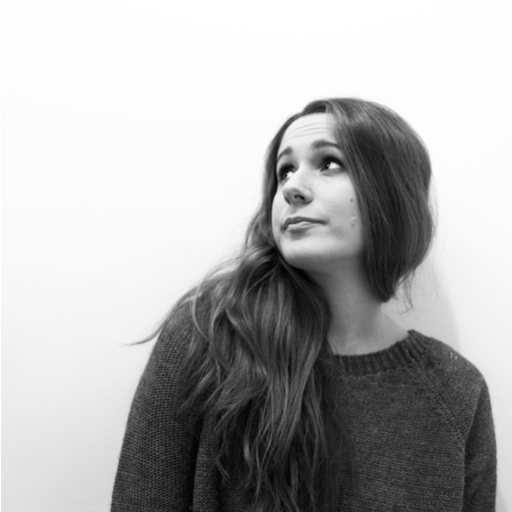
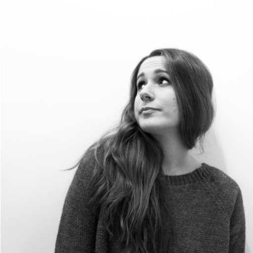

TED is a nonprofit devoted to spreading ideas, usually in the form of short,
powerful talks (18 minutes or less).
TED began in 1984 as a conference where Technology, Entertainment and Design
converged, and today covers almost all topics -from science to business to
global issues- in more than 100 languages.
Meanwhile, independently run TEDx events help share ideas in communities around
the world. TED is a global community, welcoming people from every discipline and
culture who seek a deeper understanding of the world. We believe passionately in
the power of ideas to change attitudes, lives and, ultimately, the world.
On TED.com, we're building a clearing house of free knowledge from the world's
most inspired thinkers and a community of curious souls to engage with ideas and
each other, both online and at TED and TEDx events around the world.
The TEDx Program is designed to help communities, organizations and individuals
to spark conversation and connection through local TED-like experiences.
At TEDx events, a screening of TED Talks videos - or a combination of live
presenters and TED Talks videos - sparks deep conversation and connections at
the local level. TEDx events are planned and coordinated independently, under a
free license granted by TED.
A TEDx event is a local gathering where live TED-like talks and videos
previously recorded at TED conferences are shared with the community. TEDx
events are fully planned and coordinated independently, on a
community-by-community basis. The content and design of each TEDx event is
unique and developed independently, but all of them have features in common.
TEDxNTUA is a university TEDx event, organized and hosted by the student
community of the National Technical Univesity of Athens.
TEDxNTUA aspires to become a beacon of innovation, creative thinking and social
progress. Bringing together storytellers, pioneers and artists, under the
auspices of the NTUA, promises a TED like experience that will inform, ignite
and inspire the minds of fellow students and Athenians.


 
